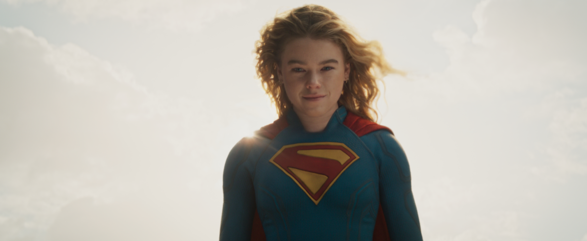

Críticas
Supergirl: A Franquia Perde o Rumo e Entra na Lista de Piores de 2026
Apesar de ter batido recordes de bilheteria, A nova super produção da DC também enfrentou uma avalanche de reclamações assim que estreou nas telonas.
O vilão principal também foi duramente atacado por outra parte dos fãs, dizendo ser uma versão sem graça do Coringa de Jared Leto.
A atuação de Milly Alcock é um dos poucos pontos elogiados no filme, que está em cartaz nesse exato momento.
Letterboxd: 3.1 | Rotten Tomatoes: 55%